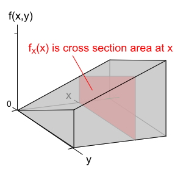
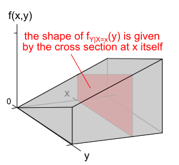

Marginal distributions
The concept of marginal distributions for continuous random variables X and Y is the same as that for discrete ones, though the mathematics to find them are different. The marginal pdf of a variable X is the univariate pdf that characterises its distribution if nothing is known about the value of the other variable, Y. We will denote the marginal distribution of X by \(f_{X}(x)\).
The value of \(f_{X}(x)\) can be visualised as the area of a cross section of the joint pdf at x. (If the variables had been discrete, it would have been the sum of joint probabilities over such a slice.)

Probabilities about X can be found directly from its marginal distribution. (Similarly, probabilities about Y can be found from its marginal distribution.)
Conditional distributions
The conditional distribution of Y given that X = x describes what is known about its distribution when the value of X is known. This is a similar concept to conditional distributions for discrete variables but, being continuous, is defined by a univariate probability density function that we will denote by \(f_{Y|X=x}(y)\). Note that the conditional distribution of Y is usually different for different values of X.
The shape of the conditional pdf of Y given that X = x is given by the shape of the cross section at x. (If the variables had been discrete, the joint probabilities in such a slice would have defined the conditional pdf, after scaling).

If the value of X is known, probabilities about Y can be found directly from its conditional distribution (and similarly for probabilities about X when the value of Y is known).
Independence and random samples
The concept of independence is the same for continuous and discrete random variables. If two variables are independent, knowing the value of one gives no information about the distribution of the other. For example, knowing the value of X gives no information about the value of Y and all conditional distributions for Y are the same as its marginal distribution,
\[ f_{Y\mid X=x}(y) \;\;=\;\; f_Y(y) \]A random sample again consists of a collection of n such independent variables.
Mathematics behind continuous bivariate distributions
We expect you to understand the concepts behind marginal and conditional distributions for continuous random variables, but the mathematics required to evaluate them is much harder than in the discrete case. We therefore do not expect you to learn how to find them mathematically.
The remaining pages in this section are only included for completeness. You do not need to understand them and they will not be examined.